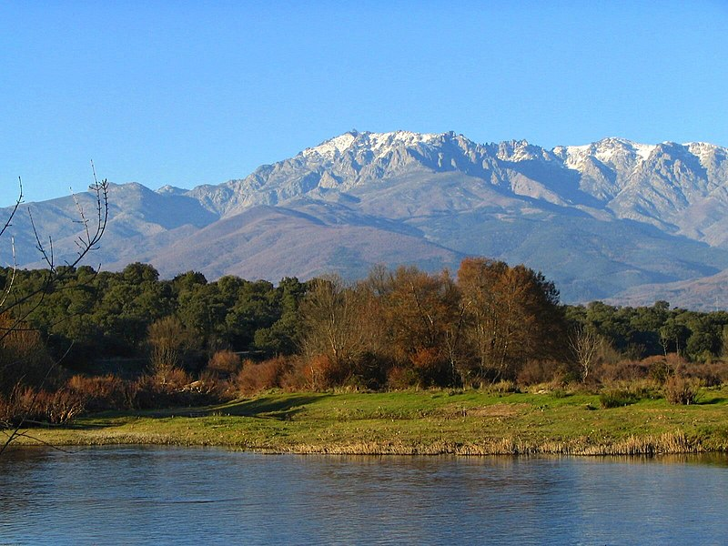

La sierra de Gredos es una sierra perteneciente al sistema Central, en la península ibérica, situada entre las provincias españolas de Salamanca, Cáceres, Ávila, Madrid y Toledo. Su máxima altitud se da en el Pico Almanzor a 2592 m sobre el nivel del mar. Gredos es una de las sierras más extensas del sistema Central y en torno a sus grandes moles graníticas basculan cuatro comunidades autónomas: Castilla y León, Castilla-La Mancha, Comunidad de Madrid y Extremadura. Se extiende de este a oeste desde San Martín de Valdeiglesias a Hervás y de norte a sur del valle del Tormes a Rosarito. Las dos vertientes de la sierra presentan fuerte disimetría entre sí, teniendo la sur un desnivel mucho más acusado.1 Parte de la sierra está declarada parque regional de la Sierra de Gredos. 